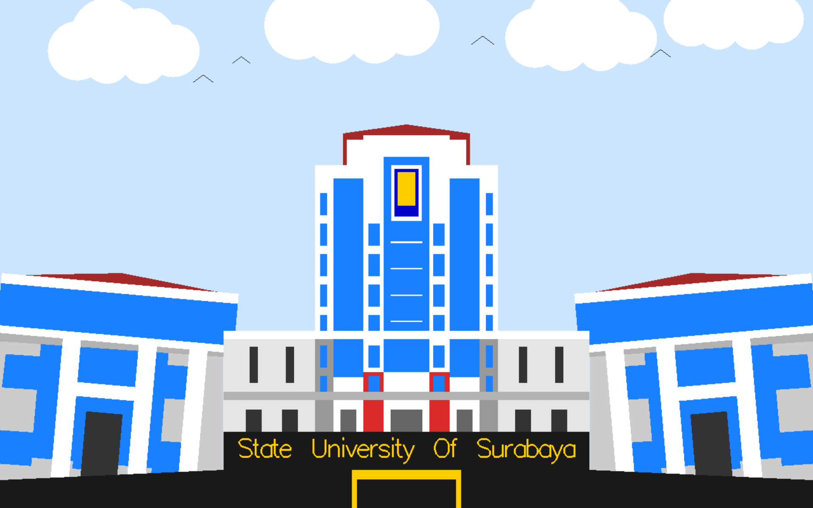

Grafika komputer merupakan cabang ilmu komputer yang mempelajari cara membuat, memanipulasi, dan menampilkan gambar digital menggunakan komputer. Dalam perkuliahan ini, mahasiswa dituntut untuk mampu mengimplementasikan konsep dasar grafika seperti pembentukan objek 2D dan transformasi geometri.
Melalui proyek UTS ini, penulis membuat representasi visual Gedung Rektorat Universitas Negeri Surabaya (UNESA) dalam bentuk objek 2D menggunakan bahasa pemrograman C++ dengan library OpenGL. Proyek ini juga mengimplementasikan konsep transformasi seperti rotasi, translasi, dan scaling agar tampilan objek lebih proporsional dan realistis.
OpenGL (Open Graphics Library) adalah library lintas platform yang digunakan untuk membuat grafik 2D dan 3D. OpenGL menyediakan fungsi untuk menggambar bentuk dasar, mengatur warna, serta melakukan transformasi pada objek grafis.
Transformasi digunakan untuk memanipulasi posisi dan ukuran objek.
Dalam OpenGL transformasi dilakukan dengan fungsi:
glTranslatef();
glRotatef();
glScalef();
Warna pada OpenGL diatur dengan fungsi:
glColor3f(r,g,b);
Nilai RGB berada pada rentang 0 – 1.

Program ini menggambarkan Gedung Rektorat UNESA dalam bentuk dua dimensi menggunakan kombinasi bentuk dasar seperti persegi dan segitiga. Selain itu ditambahkan elemen awan, burung, dan teks agar tampilan lebih hidup.
Program juga menyediakan kontrol interaktif menggunakan keyboard untuk melakukan zoom dan panning.
#include <GL/glut.h>
void render(){
glClear(GL_COLOR_BUFFER_BIT);
glBegin(GL_QUADS);
glColor3f(1,1,1);
glVertex2f(-0.5,-0.5);
glVertex2f(0.5,-0.5);
glVertex2f(0.5,0.5);
glVertex2f(-0.5,0.5);
glEnd();
glFlush();
}
int main(int argc,char** argv){
glutInit(&argc,argv);
glutCreateWindow("Rektorat UNESA");
glutDisplayFunc(render);
glutMainLoop();
}
Hasil visualisasi menunjukkan Gedung Rektorat UNESA dalam bentuk grafika 2D dengan rincian:
Program dapat dikontrol menggunakan keyboard sehingga pengguna dapat memperbesar, memperkecil, dan menggeser tampilan untuk melihat detail gambar.
Proyek ini berhasil menampilkan visualisasi dua dimensi Gedung Rektorat Universitas Negeri Surabaya menggunakan OpenGL. Konsep dasar grafika komputer seperti translasi, rotasi, dan scaling berhasil diterapkan untuk membentuk komposisi bangunan secara proporsional.
Penambahan elemen awan, burung, dan teks membuat tampilan menjadi lebih hidup dan menyerupai pemandangan nyata. Melalui proyek ini, penulis memperoleh pemahaman praktis tentang pembangunan objek grafis kompleks dari bentuk dasar menggunakan OpenGL.